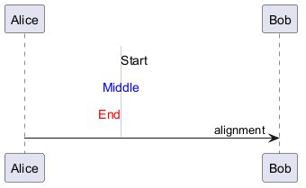

@startuml
!pragma svgparser sax
sprite textAnchor <svg viewBox="0 0 200 100" xmlns="http://www.w3.org/2000/svg">
<!-- Reference line at x=100 -->
<line x1="100" y1="0" x2="100" y2="100" stroke="#CCCCCC" stroke-width="1"/>
<text x="100" y="20" text-anchor="start" font-size="14" fill="#000000">Start</text>
<text x="100" y="50" text-anchor="middle" font-size="14" fill="#0000FF">Middle</text>
<text x="100" y="80" text-anchor="end" font-size="14" fill="#FF0000">End</text>
</svg>
Alice -> Bob : <$textAnchor> alignment
@enduml